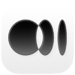

EgoLite搜索网页，或交给本地 Agent 处理
浏览记录、收藏和 Agent 操作都保留在当前任务空间。
页面停止运行
可以重新加载页面，或关闭此标签。
任务
任务空间
会话
工作空间快照
收藏库
收藏内容
0 项扩展
浏览器扩展
支持本地已解压的 Chromium 扩展目录和 ZIP 扩展包，例如油猴、广告拦截器和开发中的扩展。CRX 文件仍需先转换为 ZIP 或解压目录。
设置
本地运行环境
CoS 组件
Chat On Steroids
未安装
浏览器后端托管 Edge
Agent 接入正在检查
快捷栏Ctrl+Shift+Space
系统托盘已就绪
浏览器数据
网站权限0 条决定
已保存密码0 条
身份隔离
浏览器 Profiles
每个 Profile 使用独立的 Cookie、缓存、登录状态和扩展存储。默认 Profile 保留升级前的数据。
浏览器连接
浏览器模式
Companion正在检查本机组件
安装后，请在 Edge 或 Chrome 的扩展页面加载 Ego Windows Companion，并在目标标签页内明确授权。EgoLite 不会读取或导出原始 Cookie。
外观
主题与背景
主题和背景只保存在这台电脑上。
标签页
性能与打开方式
固定标签、播放媒体和改动过表单的页面不会自动休眠。
资源
内存管理
标签内存正在读取
运行标签0
休眠标签0
正在读取 Chromium 标签进程占用。
登录
密码与自动填充
登录信息按浏览器 Profile 分开保存。
隐私
网站权限
设置
ScanSci PDF
服务等待启动
通道检查尚未运行
运行方式EgoLite 托管
项目目录A:\Project\ScanSci PDF
正在启动 ScanSci PDF
服务就绪后会立即检查全部下载通道
设置
Agent
能力
网页访问与下载
Web Access 为 Agent 提供联网路由与验证规则。静默下载会把 Agent 发起且未指定路径的文件保存到系统下载目录。
下载目录 正在读取
当前 Profile
自动化加速
本机连接
本地 Agent
EgoLite 会为本机 Codex、Claude、Cursor 和通用 Agent 同步已开启的 Skill 与 MCP 连接。
安全
控制权交接
控制权交接已关闭。Agent 活动只显示状态和操作记录。